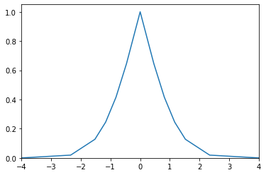
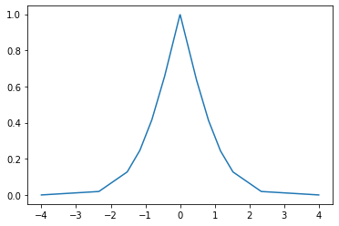

DistToPiMultilinear¶
- class floulib.DistToPiMultilinear(dist, mode, scale, epsilon)¶
Bases:
MultilinearThis class contains methods to approximate the optimal transformation of unimodal symmetric probability distributions into possibility distributions as multilinear fuzzy subsets.
The optimal transformation of a unimodal symmetric probability distribution is a convex possibility distribution with respect to each side of the mode.The surface under the possibility distribution is also convex. A recursive algorithm can be used to compute a multilinear approximation of the possibility distribution.
Note
DistToPiMultilinear is a subclass of
Multilinear, therefore all methods inMultilinearmay be used.Multilinear is a subclass of
Plot, therefore all methods inPlotmay also be used.- __init__(dist, mode, scale, epsilon)¶
Constructor
- Parameters:
dist (TYPE) – The probability distribution.
mode (float) – The mode.
scale (float) – The scale.
epsilon (float) – The approximation error.
- Return type:
None.
Example
>>> from floulib import DistToPiMultilinear >>> import numpy as np >>> from scipy.stats import norm >>> mean = 0 >>> sigma = 1 >>> normal_dist = norm(mean, sigma) >>> DistToPiMultilinear(normal_dist, mean, 4*sigma, 0.1).plot()
- pi_opt(x=None)¶
Computes the optimal possibility distribution
- dpi(x)¶
Computes the possibility distribution for x.
This method can be used as an interface with other libraries.
- Parameters:
x (numpy.ndarray) – The array of points.
- Returns:
y – The array of points.
- Return type:
numpy.ndarray
Example
>>> from floulib import DistToPiMultilinear >>> import numpy as np >>> from scipy.stats import norm >>> import matplotlib.pyplot as plt >>> mean = 0 >>> sigma = 1 >>> normal_dist = norm(mean, sigma) >>> x = np.linspace(mean - 4*sigma, mean + 4*sigma, 1000) >>> fig, ax = plt.subplots() >>> ax.plot(x, DistToPiMultilinear(normal_dist, mean, 4*sigma, 0.1).dpi(x))
- print(display='all', format='.3f')¶
Special method to represent the points of the approximation in human-readable format
- Parameters:
display (str , optional) – If display is ‘left’ or ‘right’, the approximation points for the LHS or the RHS with respect to the mode are displayed. The default is ‘all’.
format (str, optional) – The format for the display. The default is ‘.3f’.
- Return type:
None.
Example
>>> from floulib import DistToPiMultilinear >>> import numpy as np >>> from scipy.stats import norm >>> mean = 0 >>> sigma = 1 >>> normal_dist = norm(mean, sigma) >>> DistToPiMultilinear(normal_dist, mean, 4*sigma, 0.1).print() -4.000 0.000 -4.000 0.000 -2.341 0.019 -1.524 0.128 -1.163 0.245 -0.815 0.415 -0.460 0.646 0.000 1.000 0.460 0.646 0.815 0.415 1.163 0.245 1.524 0.128 2.341 0.019 4.000 0.000 4.000 0.000